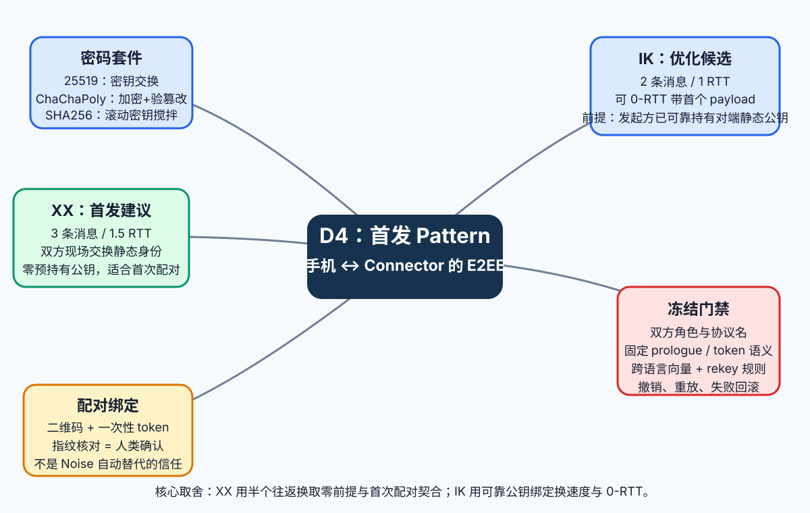
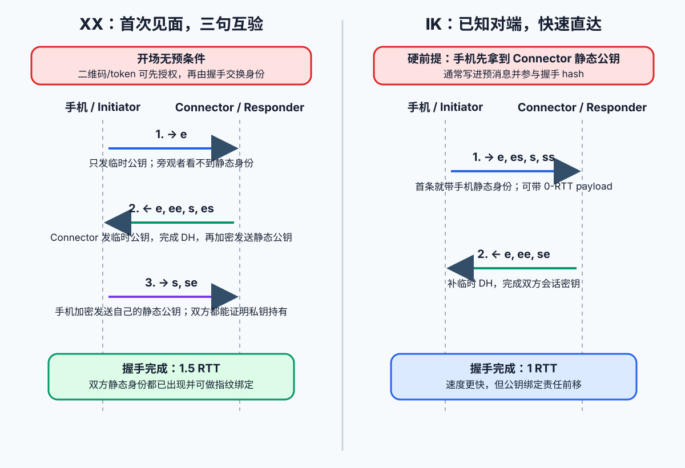
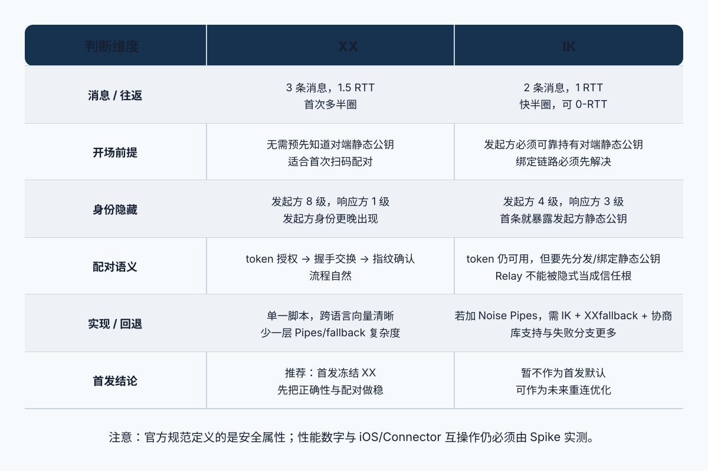
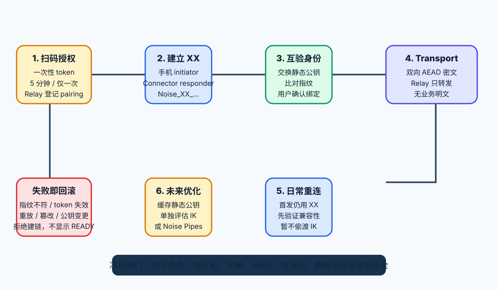

先看全貌：这到底在解决什么麻烦
NEW-Utell 的业务链路是“手机 → Relay → Connector → Utell Pi”。Connector 是业务权威，手机只保留会话内存，Relay 只转发密文。Noise 位于手机和 Connector 两个端点之间：它负责把两端变成一条只有端点能读的应用层加密管道。

图 1 · 从项目问题分出五条主线：密码套件、XX、IK、配对绑定和冻结门禁。
Noise 名字和握手符号
Noise_XX_25519_ChaChaPoly_SHA256 是四段式名称：Noise 是协议框架，XX 是握手 Pattern，25519 是 X25519 DH，ChaChaPoly 是 ChaCha20-Poly1305 AEAD，SHA256 是哈希与密钥派生的搅拌器。
| 符号 | 它做什么 | 白话记忆 |
|---|---|---|
e | 发送本次会话的临时公钥 | 本次见面的临时面具 |
s | 发送设备长期静态公钥 | 设备身份证，但不是私钥 |
ee | 临时 × 临时 DH | 两张临时面具碰一下，生成本次秘密 |
es / se | 临时 × 静态 DH | 临时面具和长期身份证交叉验证 |
ss | 静态 × 静态 DH | 两张身份证互碰，确认双方长期身份 |
每次 DH 结果会进入滚动的 chaining key。它再派生出当前 AEAD key；因此握手越往后，静态公钥和 payload 越可能已经处于加密保护下。握手结束后双方进入 transport mode，用方向分离的对称密钥加密业务密文。
XX：陌生人三轮互验
官方脚本：

- 手机先发
e，不要求提前知道 Connector 的静态公钥。 - Connector 发
e，双方执行ee，然后在加密状态里发送 Connector 静态公钥s，以es证明私钥持有。 - 手机验证后发送自己的静态公钥
s，以se让 Connector 完成反向验证。
Noise 规范的身份隐藏属性表给 XX 的 initiator 记为 8、responder 记为 1。对 NEW-Utell 来说，手机通常是 initiator，身份晚一点出现正好减少移动端身份被旁观者确认的机会。
IK：老熟人一句暗号就开聊
官方脚本：
开头的 <- s 是硬前提：手机在握手开始前已经可靠持有 Connector 的静态公钥。于是第一条消息可以直接做 es、加密发送手机静态公钥、做 ss，甚至带上 0-RTT 的加密 payload；Connector 第二条消息补齐 ee 和 se。
XX 与 IK：快与前提的经典交换

| 维度 | XX | IK |
|---|---|---|
| 消息 / 往返 | 3 条，1.5 RTT | 2 条，1 RTT；可 0-RTT payload |
| 开场前提 | 不要求预先知道对端静态公钥 | initiator 必须可靠持有 responder 静态公钥 |
| 身份出现 | 双方在握手中交换；initiator 更晚发送 | initiator 静态身份第一条就发送；responder 公钥是前置知识 |
| 扫码/token 相性 | 授权 → 握手交换 → 指纹确认，顺序自然 | 需要先解释“公钥如何可信到达手机” |
| 工程复杂度 | 单一脚本，向量和失败分支较少 | 若扩展 Pipes，要处理 IK、XXfallback、协议名和试解密 |
| NEW-Utell 首发 | 推荐基线 | 未来已配对重连优化候选 |
扫码、一次性 token、指纹和 Noise 如何接上

- Connector 首启生成静态密钥对并安全保存，展示二维码。
- 手机扫码，读取 Relay 地址、Connector 名称、指纹和一次性 token；token 建议 5 分钟有效且仅使用一次。
- 手机作为 initiator 发起
Noise_XX_25519_ChaChaPoly_SHA256。 - 双方在 XX 消息中交换静态公钥并完成私钥持有证明。
- 手机和 Connector 展示同一静态公钥指纹；用户核对后才把 pairing 绑定为有效。
- 握手完成进入 transport。Relay 只转发密文，不持有端点解密钥匙。
两层身份确认：Noise 的 es/se/ss 是密码学确认；用户核对指纹是产品信任确认。两层都通过，手机才能把状态提升为 READY。
为什么首发不直接把 IK 和 Noise Pipes 一起塞进来
Noise 官方定义了 Pipes：首次用 XX，缓存 responder 静态公钥后用 IK 做快速握手；公钥失效时再切到 XXfallback。这条路线可作为未来演进，但首发实现它会增加模式协商、协议名、fallback 角色、试解密和公钥轮换分支。
libp2p 的公开 Issue #246 记录了一个关键坑：普通 XX 与 XXfallback 是不同协议名，协议名参与握手 hash；一端用 XX、另一端用 XXfallback，双方可能无法解密。Issue #249 进一步记录了工程团队的取舍：IK 实际收益可能只有半个 RTT，而 Pipes 的复杂度和跨实现兼容负担并不划算，第一版最终只保留 XX。
WireGuard 是 IK 的真实生产例子，但它在配置阶段已经可靠分发对端公钥；这个前提与 NEW-Utell 的首次扫码配对不是同一个问题。不能把 WireGuard 的 Pattern 直接搬成产品结论。
进入技术栈冻结前，必须关掉哪些门
Noise_XX_25519_ChaChaPoly_SHA256 只是建议起点。Phone 和 Connector 必须共同冻结以下公开契约：
| 冻结项 | 要写清楚的内容 |
|---|---|
| 角色与协议名 | 手机固定 initiator、Connector 固定 responder；完整协议名逐字节一致。 |
| 静态密钥 | 生成、Keychain/Connector 存储、轮换、撤销、指纹格式和展示。 |
| token | 有效期、一次性消费、重放拒绝、与 pairing 的绑定字段。 |
| prologue | 是否使用、具体字节串、版本策略；禁止把未认证可变数据误放进去。 |
| transport | nonce/counter、方向键、最大消息、错误分类、关闭语义。 |
| rekey | 触发条件、双方同步信号、失败后重建握手；Noise 规范把它留给应用决定。 |
| 测试向量 | 每条握手消息、hash、transport 密文、错误样本；不进入私钥和业务原文。 |
pending；Phone/Rust snow 本机 Noise Spike 原始结果已记录，Connector 共同验收和正式契约仍待完成。本文不自动修改契约状态，也不把建议写成已批准实现。最小 Spike 验收
- Swift 候选库支持目标套件和 XX，不自研密码原语。
- 与 Rust
snow对同一固定输入产生一致消息、握手 hash 和 transport 密文。 - iOS 17 target 编译通过，许可证满足项目要求。
- 过期/已用 token、重放、篡改、指纹不符、公钥轮换均拒绝建链。
- 日志与 fixture 不出现私钥或业务原文。
来源与证据
以下来源已联网检索并保存于同目录 `来源与证据台账.md`；页面只摘录与本决策直接相关的事实。
- Noise Protocol Framework 官方规范：Pattern、握手符号、身份隐藏、0-RTT、Noise Pipes、rekey。
- WireGuard Protocol 官方文档：真实使用 IK 的配置前提与两消息握手。
- Rust snow：Rust 参照实现、支持的原语、fallback 未实现提示。
- Swift Noise：Swift API 的 XX/IK 和目标密码套件示例。
- libp2p Issue #246：XXfallback 协议名/hash 和兼容性陷阱。
- libp2p Issue #249：为复杂度与实际收益最终只保留 XX 的工程讨论。
书级回顾
Noise 是用握手脚本组织 DH、再进入 AEAD transport 的协议框架。XX 让双方首次见面时现场交换静态身份，代价是 3 条消息、1.5 RTT；IK 依赖 initiator 预先可靠持有 responder 静态公钥，代价前置、速度更快。NEW-Utell 的扫码、一次性 token 和指纹核对天然更贴近 XX，因此首发建议冻结 Noise_XX_25519_ChaChaPoly_SHA256，把 IK/Noise Pipes 留作已配对重连的后续 Spike。